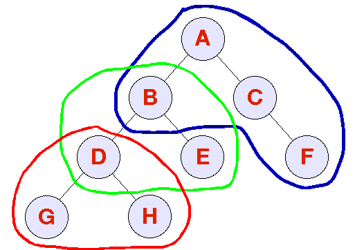
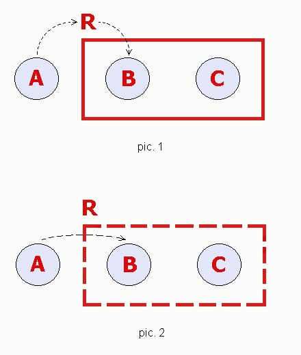

The AWT Focus Subsystem
Prior to Java 2 Standard Edition, JDK 1.4, the AWT focus subsystem was inadequate. It suffered from major design and API problems, as well as over a hundred open bugs. Many of these bugs were caused by platform inconsistencies, or incompatibilities between the native focus system for heavyweights and the Java focus system for lightweights.
The single worst problem with the AWT focus implementation was the inability to query for the currently focused Component. Not only was there no API for such a query, but also, because of an insufficient architecture, such information was not even maintained by the code.
Almost as bad was the inability of lightweight children of a Window
(not a Frame or a Dialog) to receive keyboard input. This problem
existed because Windows never received WINDOW_ACTIVATED
events and thus could never be activated, and only active Windows
could contain focused Components.
In addition, many developers noted that the APIs for FocusEvent and WindowEvent were insufficient because they did not provide a way for determining the "opposite" Component involved in the focus or activation change. For example, when a Component received a FOCUS_LOST event, it had no way of knowing which Component was gaining focus. Since Microsoft Windows provides this functionality for free, developers migrating from Microsoft Windows C/C++ or Visual Basic to Java had been frustrated by the omission.
To address these and other deficiencies, we have designed a new focus model for the AWT in JDK 1.4. The primary design changes were the construction of a new centralized KeyboardFocusManager class, and a lightweight focus architecture. The amount of focus-related, platform-dependent code has been minimized and replaced by fully pluggable and extensible public APIs in the AWT. While we have attempted to remain backward compatible with the existing implementation, we were forced to make minor incompatible changes in order to reach an elegant and workable conclusion. We anticipate that these incompatibilities will have only a trivial impact on existing applications.
This document is a formal specification both of the new APIs and of existing APIs which remain relevant in the new model. Combined with the javadoc for focus-related classes and methods, this document should enable developers to create substantial AWT and Swing applications with a focus behavior that is customized yet consistent across platforms. This document has the following sections:
- Overview of KeyboardFocusManager
- KeyboardFocusManager and Browser Contexts
- KeyEventDispatcher
- FocusEvent and WindowEvent
- Event Delivery
- Opposite Components and Windows
- Temporary FocusEvents
- Focus Traversal
- Focus Traversal Policy
- Focus Traversal Policy Providers
- Programmatic Traversal
- Focusability
- Focusable Windows
- Requesting Focus
- Focus and PropertyChangeListener
- Focus and VetoableChangeListener
- Z-Order
- Replacing DefaultKeyboardFocusManager
- Incompatibilities with Previous Releases
Overview of KeyboardFocusManager
The focus model is centralized around a single class, KeyboardFocusManager, that provides a set of APIs for client code to inquire about the current focus state, initiate focus changes, and replace default focus event dispatching with a custom dispatcher. Clients can inquire about the focus state directly, or can register a PropertyChangeListener that will receive PropertyChangeEvents when a change to the focus state occurs.
KeyboardFocusManager introduces the following main concepts and their terminology:
- The "focus owner" -- the Component which typically receives keyboard input.
- The "permanent focus owner" -- the last Component to receive focus permanently. The "focus owner" and the "permanent focus owner" are equivalent unless a temporary focus change is currently in effect. In such a situation, the "permanent focus owner" will again be the "focus owner" when the temporary focus change ends.
- The "focused Window" -- the Window which contains the "focus owner".
- The "active Window" -- the Frame or Dialog that is either the "focused Window", or the first Frame or Dialog that is an owner of the "focused Window".
- "Focus traversal" -- the user's ability to change the "focus owner" without moving the cursor. Typically, this is done using the keyboard (for example, by using the TAB key), or an equivalent device in an accessible environment. Client code can also initiate traversal programmatically. Normal focus traversal can be either "forward" to the "next" Component, or "backward" to the "previous" Component.
- "Focus traversal cycle" -- a portion of the Component hierarchy, such that normal focus traversal "forward" (or "backward") will traverse through all of the Components in the focus cycle, but no other Components. This cycle provides a mapping from an arbitrary Component in the cycle to its "next" (forward traversal) and "previous" (backward traversal) Components.
- "Traversable Component" -- Component that is in the focus traversal cycle.
- "Non-traversable Component" -- Component that is not in the focus traversal cycle. Note that a non-traversable Component can nevertheless be focused in other way (e.g. by direct focus request).
- "Focus cycle root" -- Container that is the root of the Component hierarchy for a particular "focus traversal cycle". When the "focus owner" is a Component inside a particular cycle, normal forward and backward focus traversal cannot move the "focus owner" above the focus cycle root in the Component hierarchy. Instead, two additional traversal operations, "up cycle" and "down cycle", are defined to allow keyboard and programmatic navigation up and down the focus traversal cycle hierarchy.
- "Focus traversal policy provider" - Container which has
"FocusTraversalPolicyProvider" property as true. This Container will
be used to acquire focus traversal policy. This container doesn't
define new focus cycle but only modifies the order by which its
children are traversed "forward" and "backward". Focus traversal
policy provider can be set using
setFocusTraversalPolicyProvideron the Container.
Every Window and JInternalFrame is, by default, a "focus cycle root". If it's the only focus cycle root, then all of its focusable descendants should be in its focus cycle, and its focus traversal policy should enforce that they are by making sure that all will be reached during normal forward (or backward) traversal. If, on the other hand, the Window or JInternalFrame has descendants that are also focus cycle roots, then each such descendant is a member of two focus cycles: the one that it is the root of, and the one of its nearest focus-cycle-root ancestor. In order to traverse the focusable components belonging to the focus cycle of such a "descendant" focus cycle root, one first traverses (forward or backward) to reach the descendant, and then uses the "down cycle" operation to reach, in turn, its descendants.
Here is an example:

Assume the following:
- A is a
Window, which means that it must be a focus cycle root. - B and D are
Containers that are focus cycle roots. - C is a
Containerthat is not a focus cycle root. - G, H, E, and F are all
Components.
- A is a root, and A, B, C, and F are members of A's cycle.
- B is a root, and B, D, and E are members of B's cycle.
- D is a root, and D, G, and H are members of D's cycle.
KeyboardFocusManager is an abstract class. AWT provides a default
implementation in the DefaultKeyboardFocusManager class.
KeyboardFocusManager and Browser Contexts
Some browsers partition applets in different code bases into separate contexts, and establish walls between these contexts. Each thread and each Component is associated with a particular context and cannot interfere with threads or access Components in other contexts. In such a scenario, there will be one KeyboardFocusManager per context. Other browsers place all applets into the same context, implying that there will be only a single, global KeyboardFocusManager for all applets. This behavior is implementation-dependent. Consult your browser's documentation for more information. No matter how many contexts there may be, however, there can never be more than one focus owner, focused Window, or active Window, per ClassLoader.
KeyEventDispatcher and KeyEventPostProcessor
While the user's KeyEvents should generally be delivered to the focus owner, there are rare cases where this is not desirable. An input method is an example of a specialized Component that should receive KeyEvents even though its associated text Component is and should remain the focus owner.
A KeyEventDispatcher is a lightweight interface that allows client code to pre-listen to all KeyEvents in a particular context. Instances of classes that implement the interface and are registered with the current KeyboardFocusManager will receive KeyEvents before they are dispatched to the focus owner, allowing the KeyEventDispatcher to retarget the event, consume it, dispatch it itself, or make other changes.
For consistency, KeyboardFocusManager itself is a KeyEventDispatcher. By default, the current KeyboardFocusManager will be the sink for all KeyEvents not dispatched by the registered KeyEventDispatchers. The current KeyboardFocusManager cannot be completely deregistered as a KeyEventDispatcher. However, if a KeyEventDispatcher reports that it dispatched the KeyEvent, regardless of whether it actually did so, the KeyboardFocusManager will take no further action with regard to the KeyEvent. (While it is possible for client code to register the current KeyboardFocusManager as a KeyEventDispatcher one or more times, there is no obvious reason why this would be necessary, and therefore it is not recommended.)
Client-code may also post-listen to KeyEvents in a particular context using the KeyEventPostProcessor interface. KeyEventPostProcessors registered with the current KeyboardFocusManager will receive KeyEvents after the KeyEvents have been dispatched to and handled by the focus owner. The KeyEventPostProcessors will also receive KeyEvents that would have been otherwise discarded because no Component in the application currently owns the focus. This will allow applications to implement features that require global KeyEvent post- handling, such as menu shortcuts.
Like KeyEventDispatcher, KeyboardFocusManager also implements KeyEventPostProcessor, and similar restrictions apply to its use in that capacity.
FocusEvent and WindowEvent
The AWT defines the following six event types central to the focus
model in two different java.awt.event classes:
WindowEvent.WINDOW_ACTIVATED: This event is dispatched to a Frame or Dialog (but never a Window which is not a Frame or Dialog) when it becomes the active Window.WindowEvent.WINDOW_GAINED_FOCUS: This event is dispatched to a Window when it becomes the focused Window. Only focusable Windows can receive this event.FocusEvent.FOCUS_GAINED: This event is dispatched to a Component when it becomes the focus owner. Only focusable Components can receive this event.FocusEvent.FOCUS_LOST: This event is dispatched to a Component when it is no longer the focus owner.WindowEvent.WINDOW_LOST_FOCUS: This event is dispatched to a Window when it is no longer the focused Window.WindowEvent.WINDOW_DEACTIVATED: This event is dispatched to a Frame or Dialog (but never a Window which is not a Frame or Dialog) when it is no longer the active Window.
Event Delivery
If the focus is not in java application and the user clicks on a focusable child Componenta of an inactive Frame b, the following events will be dispatched and handled in order:
- b will receive a
WINDOW_ACTIVATEDevent. - Next, b will receive a
WINDOW_GAINED_FOCUSevent. - Finally, a will receive a
FOCUS_GAINEDevent.
- a will receive a
FOCUS_LOSTevent. - b will receive a
WINDOW_LOST_FOCUSevent. - b will receive a
WINDOW_DEACTIVATEDevent. - d will receive a
WINDOW_ACTIVATEDevent. - d will receive a
WINDOW_GAINED_FOCUSevent. - c will receive a
FOCUS_GAINEDevent.
In addition, each event type will be dispatched in 1-to-1
correspondence with its opposite event type. For example, if a
Component receives a FOCUS_GAINED event, under no
circumstances can it ever receive another FOCUS_GAINED
event without an intervening FOCUS_LOST event.
Finally, it is important to note that these events are delivered for
informational purposes only. It is impossible, for example, to prevent
the delivery of a pending FOCUS_GAINED event by requesting
focus back to the Component losing focus while handling the preceding
FOCUS_LOST event. While client code may make such a request,
the pending FOCUS_GAINED will still be delivered,
followed later by the events transferring focus back to the original
focus owner.
If it is absolutely necessary to suppress the FOCUS_GAINED event,
client code can install a VetoableChangeListener which
rejects the focus change. See Focus
and VetoableChangeListener.
Opposite Components and Windows
Each event includes information about the "opposite" Component or
Window involved in the focus or activation change. For example, for a
FOCUS_GAINED event, the opposite Component is the Component
that lost focus. If the focus or activation change occurs with a native
application, with a Java application in a different VM or context, or
with no other Component, then the opposite Component or Window is
null. This information is accessible using
FocusEvent.getOppositeComponent or
WindowEvent.getOppositeWindow.
On some platforms, it is not possible to discern the opposite Component or Window when the focus or activation change occurs between two different heavyweight Components. In these cases, the opposite Component or Window may be set to null on some platforms, and to a valid non-null value on other platforms. However, for a focus change between two lightweight Components which share the same heavyweight Container, the opposite Component will always be set correctly. Thus, a pure Swing application can ignore this platform restriction when using the opposite Component of a focus change that occurred within a top-level Window.
Temporary FocusEvents
FOCUS_GAINED and FOCUS_LOST events are
marked as either temporary or permanent.
Temporary FOCUS_LOST events are sent when a Component is
losing the focus, but will regain the focus shortly. These events
can be useful when focus changes are used as triggers for validation
of data. For instance, a text Component may want to commit its
contents when the user begins interacting with another Component,
and can accomplish this by responding to FOCUS_LOST events.
However, if the FocusEvent received is temporary,
the commit should not be done, since the text field will be receiving
the focus again shortly.
A permanent focus transfer typically occurs as the result of a user
clicking on a selectable, heavyweight Component, focus traversal with
the keyboard or an equivalent input device, or from a call to
requestFocus() or requestFocusInWindow().
A temporary focus transfer typically occurs as the result of showing a Menu or PopupMenu, clicking or dragging a Scrollbar, moving a Window by dragging the title bar, or making another Window the focused Window. Note that on some platforms, these actions may not generate any FocusEvents at all. On others, temporary focus transfers will occur.
When a Component receives a temporary FOCUS_LOST event,
the event's opposite Component (if any) may receive a temporary
FOCUS_GAINED event, but could also receive a permanent
FOCUS_GAINED event. Showing a Menu or PopupMenu, or
clicking or dragging a Scrollbar, should generate a temporary
FOCUS_GAINED event. Changing the focused Window,
however, will yield a permanent FOCUS_GAINED event
for the new focus owner.
The Component class includes variants of requestFocus and
requestFocusInWindow which take a desired temporary state as a
parameter. However, because specifying an arbitrary temporary state
may not be implementable on all native windowing systems, correct
behavior for this method can be guaranteed only for lightweight
Components. This method is not intended for general use, but exists
instead as a hook for lightweight Component libraries, such as Swing.
Focus Traversal
Each Component defines its own Set of focus traversal keys for a given
focus traversal operation. Components support separate Sets of keys
for forward and backward traversal, and also for traversal up one
focus traversal cycle. Containers which are focus cycle roots also
support a Set of keys for traversal down one focus traversal cycle. If
a Set is not explicitly defined for a Component, that Component
recursively inherits a Set from its parent, and ultimately from a
context-wide default set on the current KeyboardFocusManager.
Using the AWTKeyStroke API, client code can specify
on which of two specific KeyEvents, KEY_PRESSED or
KEY_RELEASED, the focus traversal operation will occur.
Regardless of which KeyEvent is specified, however, all KeyEvents
related to the focus traversal key, including the associated
KEY_TYPED event, will be consumed, and will not be
dispatched to any Component. It is a runtime error to specify a
KEY_TYPED event as mapping to a focus traversal operation,
or to map the same event to multiple focus traversal operations for any
particular Component or for a KeyboardFocusManager's defaults.
The default focus traversal keys are implementation-dependent. Sun recommends that the all implementations for a particular native platform use the same keys. For Windows and Unix, the recommendations are:
- traverse forward to the next Component:
TextAreas:CTRL-TABonKEY_PRESSED
All others:TABonKEY_PRESSEDandCTRL-TABonKEY_PRESSED - traverse backward to the previous Component:
TextAreas:CTRL-SHIFT-TABonKEY_PRESSED
All others:SHIFT-TABonKEY_PRESSEDandCTRL-SHIFT-TABonKEY_PRESSED - traverse up one focus traversal cycle : <none>
- traverse down one focus traversal cycle : <none>
Components can enable and disable all of their focus traversal keys en
masse using Component.setFocusTraversalKeysEnabled. When focus
traversal keys are disabled, the Component receives all KeyEvents for
those keys. When focus traversal keys are enabled, the Component never
receives KeyEvents for traversal keys; instead, the KeyEvents are
automatically mapped to focus traversal operations.
For normal forward and backward traversal, the AWT focus
implementation determines which Component to focus next based on the
FocusTraversalPolicy of
the focus owner's focus cycle root or focus traversal policy provider. If the
focus owner is a focus cycle root, then it may be ambiguous as to which
Components represent the next and previous Components to focus during
normal focus traversal. Thus, the current
KeyboardFocusManager maintains a reference to the
"current" focus cycle root, which is global across all contexts. The
current focus cycle root is used to resolve the ambiguity.
For up-cycle traversal, the focus owner is set to the current focus owner's focus cycle root, and the current focus cycle root is set to the new focus owner's focus cycle root. If, however, the current focus owner's focus cycle root is a top-level window, then the focus owner is set to the focus cycle root's default component to focus, and the current focus cycle root is unchanged.
For down-cycle traversal, if the current focus owner is a focus cycle root, then the focus owner is set to the current focus owner's default component to focus, and the current focus cycle root is set to the current focus owner. If the current focus owner is not a focus cycle root, then no focus traversal operation occurs.
FocusTraversalPolicy
A FocusTraversalPolicy defines the order in which Components within
a particular focus cycle root or focus traversal policy provider are
traversed. Instances of FocusTraversalPolicy can be shared across
Containers, allowing those Containers to implement the same traversal policy.
FocusTraversalPolicies do not need to be reinitialized when the
focus-traversal-cycle hierarchy changes.
Each FocusTraversalPolicy must define the following
five algorithms:
- Given a focus cycle root and a Component a in that cycle, the next Component after a.
- Given a focus cycle root and a Component a in that cycle, the previous Component before a.
- Given a focus cycle root, the "first" Component in that cycle. The "first" Component is the Component to focus when traversal wraps in the forward direction.
- Given a focus cycle root, the "last" Component in that cycle. The "last" Component is the Component to focus when traversal wraps in the reverse direction.
- Given a focus cycle root, the "default" Component in that cycle. The "default" Component will be the first to receive focus when traversing down into a new focus traversal cycle. This may be the same as the "first" Component, but need not be.
A FocusTraversalPolicy may optionally provide an
algorithm for the following:
Given a Window, the "initial" Component in that Window. The initial Component will be the first to receive focus when the Window is first made visible. By default, this is the same as the "default" Component.In addition, Swing provides a subclass of
FocusTraversalPolicy,
InternalFrameFocusTraversalPolicy, which allows developers
to provide an algorithm for the following:
Given aAJInternalFrame, the "initial" Component in thatJInternalFrame. The initial Component is the first to receive focus when theJInternalFrameis first selected. By default, this is the same as theJInternalFrame's default Component to focus.
FocusTraversalPolicy is installed on a Container using
Container.setFocusTraversalPolicy. If a policy is not explicitly
set, then a Container inherits its policy from its nearest focus-cycle-root
ancestor. Top-levels initialize their focus traversal policies using the context
default policy. The context default policy is established by using
KeyboardFocusManager. setDefaultFocusTraversalPolicy.
AWT provides two standard FocusTraversalPolicy
implementations for use by client code.
ContainerOrderFocusTraversalPolicy: Iterates across the Components in a focus traversal cycle in the order they were added to their Containers. Each Component is tested for fitness using the accept(Component) method. By default, a Component is fit only if it is visible, displayable, enabled, and focusable.- By default, ContainerOrderFocusTraversalPolicy implicitly transfers focus down-cycle. That is, during normal forward focus traversal, the Component traversed after a focus cycle root will be the focus-cycle-root's default Component to focus, regardless of whether the focus cycle root is a traversable or non-traversable Container (see the pic.1,2 below). Such behavior provides backward compatibility with applications designed without the concepts of up- and down-cycle traversal.
DefaultFocusTraversalPolicy: A subclass ofContainerOrderFocusTraversalPolicywhich redefines the fitness test. If client code has explicitly set the focusability of a Component by either overridingComponent.isFocusTraversable()orComponent.isFocusable(), or by callingComponent.setFocusable(boolean), then aDefaultFocusTraversalPolicybehaves exactly like aContainerOrderFocusTraversalPolicy. If, however, the Component is relying on default focusability, then aDefaultFocusTraversalPolicywill reject all Components with non-focusable peers.
The focusability of a peer is implementation-dependent. Sun recommends that all implementations for a particular native platform construct peers with the same focusability. The recommendations for Windows and Unix are that Canvases, Labels, Panels, Scrollbars, ScrollPanes, Windows, and lightweight Components have non-focusable peers, and all other Components have focusable peers. These recommendations are used in the Sun AWT implementations. Note that the focusability of a Component's peer is different from, and does not impact, the focusability of the Component itself.
Swing provides two additional, standard FocusTraversalPolicy implementations for use by client code. Each implementation is an InternalFrameFocusTraversalPolicy.
- SortingFocusTraversalPolicy: Determines traversal order by sorting the Components of a focus traversal cycle based on a given Comparator. Each Component is tested for fitness using the accept(Component) method. By default, a Component is fit only if it is visible, displayable, enabled, and focusable.
- By default, SortingFocusTraversalPolicy implicitly transfers focus down-cycle. That is, during normal forward focus traversal, the Component traversed after a focus cycle root will be the focus-cycle-root's default Component to focus, regardless of whether the focus cycle root is a traversable or non-traversable Container (see the pic.1,2 below). Such behavior provides backward compatibility with applications designed without the concepts of up- and down-cycle traversal.
- LayoutFocusTraversalPolicy: A subclass of
SortingFocusTraversalPolicy which sorts Components based on their
size, position, and orientation. Based on their size and position,
Components are roughly categorized into rows and columns. For a
Container with horizontal orientation, columns run left-to-right or
right-to-left, and rows run top-to-bottom. For a Container with
vertical orientation, columns run top-to-bottom and rows run
left-to-right or right-to-left. All columns in a row are fully
traversed before proceeding to the next row.
In addition, the fitness test is extended to exclude JComponents that have or inherit empty InputMaps.
The figure below shows an implicit focus transfer:

Assume the following:
- A, B and C are components in some window (a container)
- R is a container in the window and it is a parent of B and C. Besides, R is a focus cycle root.
- B is the default component in the focus traversal cycle of R
- R is a traversable Container in the pic.1, and it is a non-traversable Container in the pic.2.
- In such a case a forward traversal will look as follows:
- pic.1 : A -> R -> B -> C
- pic.2 : A -> B -> C
Swing applications, or mixed Swing/AWT applications, that use one of the standard look and feels, or any other look and feel derived from BasicLookAndFeel, will use LayoutFocusTraversalPolicy for all Containers by default.
All other applications, including pure AWT applications, will use
DefaultFocusTraversalPolicy by default.
Focus Traversal Policy Providers
A Container that isn't a focus cycle root has an option to provide a
FocusTraversalPolicy of its own. To do so, one needs to set Container's focus
traversal policy provider property to true with the call to
Container.setFocusTraversalPolicyProvider(boolean)
To determine whether a Container is a focus traversal policy provider, the
following method should be used:
Container.isFocusTraversalPolicyProvider()
If focus traversal policy provider property is set on a focus cycle root, it
isn't considered a focus traversal policy provider and behaves just like any
other focus cycle root.
The main difference between focus cycle roots and focus traversal policy providers is that the latter allow focus to enter and leave them just as all other Containers. However, children inside focus traversal policy provider are traversed in the order determined by provider's FocusTraversalPolicy. In order to enable focus traversal policy providers to behave this way, FocusTraversalPolicies treat them in the following manner:
- Focus traversal policy providers can be passed to FocusTraversalPolicy methods instead of focus cycle roots.
- When calculating next or previous Component in
FocusTraversalPolicy.getComponentAfterorFocusTraversalPolicy.getComponentBefore,- if a Component is a child of a focus traversal policy provider,
the next and previous for this Component are determined using this
focus traversal policy provider's FocusTraversalPolicy. However,
in order for focus to leave the provider, the following rules are
applied:
- if at some point the
nextfound Component is thefirstComponent of focus traversal policy provider, the Component after the focus traversal policy provider is returned - if at some point the
previousfound Component is thelastComponent of focus traversal policy provider, the Component before the focus traversal policy provider is returned
- if at some point the
- When calculating the next Component in
FocusTraversalPolicy.getComponentAfter,- if an obtained Component is a non-traversable Container and it is a focus traversal policy provider, then the default Component of that provider is returned
- if the Component passed to the
FocusTraversalPolicy.getComponentAftermethod is a traversable Container and it is a focus traversal policy provider, then the default Component of this provider is returned
- When calculating the previous Component in
FocusTraversalPolicy.getComponentBefore,- if an obtained Component is a Container (traversable or non-traversable) and it is a focus traversal policy provider, then the last Component of that provider is returned
- if a Component is a child of a focus traversal policy provider,
the next and previous for this Component are determined using this
focus traversal policy provider's FocusTraversalPolicy. However,
in order for focus to leave the provider, the following rules are
applied:
- When calculating the first Component in FocusTraversalPolicy.getFirstComponent,
- if an obtained Component is a non-traversable Container and it is a focus traversal policy provider, then the default Component of that provider is returned
- if an obtained Component is a traversable Container and it is a focus traversal policy provider, then that Container itself is returned
- When calculating the last Component in FocusTraversalPolicy.getLastComponent,
- if an obtained Component is a Container (traversable or non-traversable) and it is a focus traversal policy provider, then the last Component of that provider is returned
Programmatic Traversal
In addition to user-initiated focus traversal, client code can
initiate a focus traversal operation programmatically. To client code,
programmatic traversals are indistinguishable from user-initiated
traversals. The preferred way to initiate a programmatic traversal is
to use one of the following methods on KeyboardFocusManager:
KeyboardFocusManager.focusNextComponent()KeyboardFocusManager.focusPreviousComponent()KeyboardFocusManager.upFocusCycle()KeyboardFocusManager.downFocusCycle()
Each of these methods initiates the traversal operation with the current focus owner. If there is currently no focus owner, then no traversal operation occurs. In addition, if the focus owner is not a focus cycle root, then downFocusCycle() performs no traversal operation.
KeyboardFocusManager also supports the following variants
of these methods:
KeyboardFocusManager.focusNextComponent(Component)KeyboardFocusManager.focusPreviousComponent(Component)KeyboardFocusManager.upFocusCycle(Component)KeyboardFocusManager.downFocusCycle(Container)
Alternate, but equivalent, APIs are defined on the Component and Container classes themselves:
Component.transferFocus()Component.transferFocusBackward()Component.transferFocusUpCycle()Container.transferFocusDownCycle()
KeyboardFocusManager variants, each of these methods
initiates the traversal operation as though the Component is the focus
owner, though it need not be.
Also note that hiding or disabling the focus owner, directly or indirectly via an ancestor, or making the focus owner non-displayable or non-focusable, initiates an automatic, forward focus traversal. While hiding any ancestor, lightweight or heavyweight, will always indirectly hide its children, only disabling a heavyweight ancestor will disable its children. Thus, disabling a lightweight ancestor of the focus owner does not automatically initiate a focus traversal.
If client code initiates a focus traversal, and there is no other Component to focus, then the focus owner remains unchanged. If client code initiates an automatic focus traversal by hiding the focus owner, directly or indirectly, or by making the focus owner non-displayable or non-focusable, and there is no other Component to focus, then the global focus owner is cleared. If client code initiates an automatic focus traversal by disabling the focus owner, directly or indirectly, and there is no other Component to focus, then the focus owner remains unchanged.
Focusability
A focusable Component can become the focus owner ("focusability") and participates in keyboard focus traversal ("focus traversability") with a FocusTraversalPolicy. There is no separation of these two concepts; a Component must either be both focusable and focus traversable, or neither. A Component expresses this state via the isFocusable() method. By default, all Components return true from this method. Client code can change this default by calling Component.setFocusable(boolean).
Focusable Windows
To support palette windows and input methods, client code can prevent a Window from becoming the focused Window. By transitivity, this prevents the Window or any of its descendants from becoming the focus owner. Non-focusable Windows may still own Windows that are focusable. By default, every Frame and Dialog is focusable. Every Window which is not a Frame or Dialog, but whose nearest owning Frame or Dialog is showing on the screen, and which has at least one Component in its focus traversal cycle, is also focusable by default. To make a Window non-focusable, use Window.setFocusableWindowState(false).
If a Window is non-focusable, this restriction is enforced when the
KeyboardFocusManager sees a WINDOW_GAINED_FOCUS
event for the Window. At this point, the focus change is rejected and
focus is reset to a different Window. The rejection recovery scheme
is the same as if a VetoableChangeListener rejected the
focus change. See Focus
and VetoableChangeListener.
Because the new focus implementation requires that KeyEvents intended for a Window or its descendants be proxied through a child of the Window's owner, and because this proxy must be mapped on X11 in order to receive events, a Window whose nearest owning Frame or Dialog is not showing could never receive KeyEvents on X11. To support this restriction, we have made a distinction between a Window's "window focusability" and its "window focusability state". A Window's focusability state is combined with the showing state of the Window's nearest owning Frame or Dialog to determine the Window's focusability. By default, all Windows have a focusability state of true. Setting a Window's focusability state to false ensures that it will not become the focused Window regardless of the showing state of its nearest owning Frame or Dialog.
Swing allows applications to create JWindows with null owners. Swing constructs all such JWindows so that they are owned by a private, hidden Frame. Because the showing state of this Frame will always be false, a JWindow constructed will a null owner can never be the focused Window, even if it has a Window focusability state of true.
If the focused Window is made non-focusable, then the AWT will attempt to focus the most recently focused Component of the Window's owner. The Window's owner will thus become the new focused Window. If the Window's owner is also a non-focusable Window, then the focus change request will proceed up the ownership hierarchy recursively. Since not all platforms support cross-Window focus changes (see Requesting Focus), it is possible that all such focus change requests will fail. In this case, the global focus owner will be cleared and the focused Window will remain unchanged.
Requesting Focus
A Component can request that it become the focus owner by calling
Component.requestFocus(). This initiates a permanent
focus transfer to the Component only if the Component is displayable,
focusable, visible and all of its ancestors (with the exception of the
top-level Window) are visible. The request will be immediately denied if
any of these conditions is not met. A disabled Component may be
the focus owner; however, in this case, all KeyEvents will be discarded.
The request will also be denied if the Component's top-level Window is not the focused Window and the platform does not support requesting focus across Windows. If the request is denied for this reason, the request is remembered and will be granted when the Window is later focused by the user. Otherwise, the focus change request changes the focused Window as well.
There is no way to determine synchronously whether a focus change
request has been granted. Instead, client code must install a
FocusListener on the Component and watch for the delivery of a
FOCUS_GAINED event. Client code must not assume that
the Component is the focus owner until it receives this event.
The event may or may not be delivered before requestFocus()
returns. Developers must not assume one behavior or the other.
The AWT supports type-ahead if all focus change requests are made on the EventDispatchThread. If client code requests a focus change, and the AWT determines that this request might be granted by the native windowing system, then the AWT will notify the current KeyboardFocusManager that is should enqueue all KeyEvents with a timestamp later than the that of the event currently being handled. These KeyEvents will not be dispatched until the new Component becomes the focus owner. The AWT will cancel the delayed dispatching request if the focus change does not succeed at the native level, if the Component's peer is disposed, or if the focus change is vetoed by a VetoableChangeListener. KeyboardFocusManagers are not required to support type-ahead if a focus change request is made from a thread other than the EventDispatchThread.
Because Component.requestFocus() cannot be implemented
consistently across platforms, developers are encouraged to use
Component.requestFocusInWindow() instead. This method
denies cross-Window focus transfers on all platforms automatically.
By eliminating the only platform-specific element of the focus transfer,
this method achieves consistent cross-platform behavior.
In addition, requestFocusInWindow() returns a boolean value.
If 'false' is returned, the request is guaranteed to fail. If 'true' is
returned, the request will succeed unless it is vetoed, or an
extraordinary event, such as disposal of the Component's peer, occurs
before the request can be granted by the native windowing
system. Again, while a return value of 'true' indicates that the
request is likely to succeed, developers must never assume that this
Component is the focus owner until this Component receives a
FOCUS_GAINED event.
If client code wants no Component in the application to be the focus
owner, it can call the method KeyboardFocusManager.
clearGlobalFocusOwner() on the current
KeyboardFocusManager. If there exists a focus owner
when this method is called, the focus owner will receive a permanent
FOCUS_LOST event. After this point, the AWT
focus implementation will discard all KeyEvents until the user or
client code explicitly sets focus to a Component.
The Component class also supports variants of requestFocus and
requestFocusInWindow that allow client code to specify
a temporary state.
See Temporary FocusEvents
Focus and PropertyChangeListener
Client code can listen to changes in context-wide focus state, or to changes in focus-related state in Components, via PropertyChangeListeners.
The KeyboardFocusManager supports the following properties:
focusOwner: the focus ownerfocusedWindow: the focused WindowactiveWindow: the active WindowdefaultFocusTraversalPolicy: the default focus traversal policyforwardDefaultFocusTraversalKeys: the Set of defaultFORWARD_TRAVERSAL_KEYSbackwardDefaultFocusTraversalKeys: the Set of defaultBACKWARD_TRAVERSAL_KEYSupCycleDefaultFocusTraversalKeys: the Set of defaultUP_CYCLE_TRAVERSAL_KEYSdownCycleDefaultFocusTraversalKeys: the Set of defaultDOWN_CYCLE_TRAVERSAL_KEYScurrentFocusCycleRoot: the current focus cycle root
A PropertyChangeListener installed on the current
KeyboardFocusManager will only see these changes within
the KeyboardFocusManager's context, even though the
focus owner, focused Window, active Window, and current focus cycle
root comprise the global focus state shared by all contexts.
We believe this is less intrusive than requiring client code to pass
a security check before installing a PropertyChangeListener.
Component supports the following focus-related properties:
focusable: the Component's focusabilityfocusTraversalKeysEnabled: the Component's focus traversal keys enabled stateforwardFocusTraversalKeys: the Component's Set ofFORWARD_TRAVERSAL_KEYSbackwardFocusTraversalKeys: the Component's Set ofBACKWARD_TRAVERSAL_KEYSupCycleFocusTraversalKeys: the Component's Set ofUP_CYCLE_TRAVERSAL_KEYS
In addition to the Component properties, Container supports the following focus-related properties:
downCycleFocusTraversalKeys: the Container's Set ofDOWN_CYCLE_TRAVERSAL_KEYSfocusTraversalPolicy: the Container's focus traversal policyfocusCycleRoot: the Container's focus-cycle-root state
In addition to the Container properties, Window supports the following focus-related property:
focusableWindow: the Window's focusable Window state
Also note that a PropertyChangeListener installed on a
Window will never see a PropertyChangeEvent for the
focusCycleRoot property.
A Window is always a focus cycle root; this property cannot change.
Focus and VetoableChangeListener
The KeyboardFocusManager also supports
VetoableChangeListeners for the following properties:
- "focusOwner": the focus owner
- "focusedWindow": the focused Window
- "activeWindow": the active Window
VetoableChangeListeners are notified of the state change before the change is reflected in the KeyboardFocusManager. Conversely, PropertyChangeListeners are notified after the change is reflected. It follows that all VetoableChangeListeners will be notified before any PropertyChangeListener.
VetoableChangeListeners must be idempotent, and must veto both loss
and gain events for a particular focus change (e.g., both
FOCUS_LOST and FOCUS_GAINED). For example,
if a VetoableChangeListener vetoes a FOCUS_LOST
event, a KeyboardFocusManager is not required to search the
EventQueue and remove the associated pending
FOCUS_GAINED event. Instead, the
KeyboardFocusManager is free to attempt to
dispatch this event and it is the responsibility of the
VetoableChangeListener to veto it as well. In addition,
during processing of the FOCUS_GAINED event, the
KeyboardFocusManager may attempt to resync the global
focus state by synthesizing another FOCUS_LOST event.
This event must be vetoed just as the first FOCUS_LOST event was.
A KeyboardFocusManager may not hold any locks while
notifying PropertyChangeListeners of a state change.
This requirement is relaxed for VetoableChangeListeners,
however. Therefore, client-definied VetoableChangeListeners
should avoid acquiring additional locks inside
vetoableChange(PropertyChangeEvent) as this may lead to deadlock.
If a focus or activation change is rejected, the KeyboardFocusManager
will initiate rejection recovery as follows:
- If a focused or active Window change was rejected, then the
focused or active Window will be reset to the Window which was
previously the focused or active Window. If there is no such
Window, then the
KeyboardFocusManagerwill clear the global focus owner. - If a focus owner change was rejected, then the focus owner will be
reset to the Component which was previously the focus owner. If
that is not possible, then it will be reset to the next Component
in the focus traversal cycle after the previous focus owner. If
that is also not possible, then the
KeyboardFocusManagerwill clear the global focus owner.
VetoableChangeListeners must be careful to avoid vetoing focus
changes initiated as a result of veto rejection recovery. Failure
to anticipate this situation could lead to an infinite cycle of
vetoed focus changes and recovery attempts.
Z-Order
On some native windowing systems, the Z-order of a Window can affect its focused or active (if applicable) state. On Microsoft Windows, the top-most Window is naturally the focused Window as well. However, on Solaris, many window managers use a point-to-focus model that ignores Z-order in determining the focused Window. When focusing or activating Windows, the AWT adheres to the UI requirements of the native platform. Therefore, the focus behavior of Z-order-related methods such as:
Window.toFront()Window.toBack()Window.show()Window.hide()Window.setVisible(boolean)Window.dispose()Frame.setState(int)
Window.toFront():
Microsoft Windows: The Window is moved to front, if possible. While we will always be able to move this Window in front of other Windows in the same VM, Windows 98 and Windows 2000 do not allow an application to bring any of its windows to the front unless one of that application's windows is already in the foreground. In this case, Windows will instead flash the Window's icon in the taskbar. If the Window is moved to the front, it will be made the focused and (if applicable) active Window.
Solaris: The Window is moved to front. In a point-to-focus window manager, the Window will become the focused Window if it is the top-most Window underneath the cursor. In a click-to-focus window manager, the focused Window will remain unchanged.Window.toBack():
Microsoft Windows: The Window is moved to back. Note however that Microsoft Windows insists that an owned Window always be in front of all of its recursive owners. Thus, after the completion of this operation, the Window may not be the lowest Java Window in the Z-order. If the Window, or any of its owners, was the focused Window, then the focused Window is reset to the top-most Window in the VM.
Solaris: The Window is moved to back. Like Microsoft Windows, some window managers insist than an owned Window always be in front of all of its recursive owners. Thus, after the completion of this operation, the Window may not be the lowest Java Window in the Z-order. If the Window was the focused Window, it will lose focus in a point-to-focus window manager if it is no longer the top-most Window under the cursor. In a click-to-focus window manager, the focused Window will remain unchanged.Window.show()/Window.setVisible(true)/Frame.setState(NORMAL):
Microsoft Windows: The Window is moved to front and becomes the focused Window.
Solaris: The Window is moved to front. In a point-to-focus focus window manager, the Window will be focused if it is now the top-most Window under the cursor. In a click-to-focus window manager, the Window will become the focused Window.Window.hide()/Window.setVisible(false)/Window.dispose()/ Frame.setState(ICONIFIED):
Microsoft Windows: If the Window was the focused Window, the focused Window is reset to a window chosen by the OS, or to no window. The window may be in a native application, or a Java application in another VM.
Solaris: If the Window was the focused Window, in a point-to- focus window manager, the top-most Window under the cursor will become the focused Window. In a click-to-focus window manager, the focused Window is reset to a window chosen by the window manager. The window may be in a native application, or a Java application in another VM.
Replacing DefaultKeyboardFocusManager
KeyboardFocusManagers are pluggable at the browser context
level. Client code can subclass KeyboardFocusManager or
DefaultKeyboardFocusManager to modify the way that WindowEvents
related to focus, FocusEvents, and KeyEvents are handled and
dispatched, and to examine and modify the global focus state. A custom
KeyboardFocusManager can also reject focus changes at a more
fundamental level then a FocusListener or WindowListener ever could.
While giving a developer ultimate control over the focus model,
replacing the entire KeyboardFocusManager is a difficult process
requiring a thorough understanding of the peer focus layer.
Fortunately, most applications do not need this much control.
Developers are encouraged to use KeyEventDispatchers,
KeyEventPostProcessors, FocusTraversalPolicies,
VetoableChangeListeners, and other concepts discussed in this document
before resorting to a full replacement of the KeyboardFocusManager.
First note that, because unhindered access to Components in other
contexts represents a security hole, the SecurityManager must grant a
new permission, "replaceKeyboardFocusManager", before client code is
permitted to replace the KeyboardFocusManager with an arbitrary
subclass instance. Because of the security check, replacing the
KeyboardFocusManager is not an option for applications that will be
deployed in environments with a SecurityManager, such as applets in a
browser.
Once installed, a KeyboardFocusManager instance has
access to the global focus state via a set of protected functions.
The KeyboardFocusManager can only call these functions
if it is installed in the calling thread's context. This ensures
that malicious code cannot circumvent the security check in
KeyboardFocusManager.setCurrentFocusManager.
A KeyboardFocusManager should always work with
the global focus state instead of the context focus state.
Failure to do this will lead to incorrect behavior of the
KeyboardFocusManager.
The primary responsibility of a KeyboardFocusManager
is the dispatch of the following events:
- all
KeyEvents - all
FocusEvents WindowEvent.WINDOW_GAINED_FOCUSWindowEvent.WINDOW_LOST_FOCUSWindowEvent.WINDOW_ACTIVATEDWindowEvent.WINDOW_DEACTIVATED
KeyboardFocusManager
with all of the above events except WINDOW_ACTIVATED
and WINDOW_DEACTIVATED. The KeyboardFocusManager
must synthesize WINDOW_ACTIVATED and
WINDOW_DEACTIVATED events when appropriate and target them
accordingly.
The KeyboardFocusManager may need to retarget the events
provided by the peer layer to its own notion of the focus owner or
focused Window:
- A KeyEvent must be retargeted to the focus owner. Because the peer layer is unaware of any lightweight Components, KeyEvents will arrive from the peer layer targeted to the focus owner's heavyweight Container, not the focus owner.
- A
FOCUS_LOSTevent must be retargeted to the focus owner. Again, this is necessary because the peer layer is unaware of lightweight Components. - A
WINDOW_LOST_FOCUSevent must be retargeted to the focused Window. The implementation of the Window class may cause the native focused Window to differ from the Java focused Window.
A KeyboardFocusManager must ensure proper event ordering,
and a 1-to-1 correspondence between an event and its opposite event type.
The peer layer does not make any of these guarantees. For example, it is
possible for the peer layer to send a FOCUS_GAINED
event before a WINDOW_GAINED_FOCUS event.
The KeyboardFocusManager is responsible for
ensuring that the WINDOW_GAINED_FOCUS event is dispatched
before the FOCUS_GAINED event.
Before redispatching an event via KeyboardFocusManager.
redispatchEvent, a KeyboardFocusManager
must attempt to update the global focus state. Typically, this
is done using one of the KeyboardFocusManager.setGlobal*
methods; however, an implementation is free to implement its own methods.
After attempting an update, the KeyboardFocusManager
must verify that the global focus state change
was not rejected. A rejection is detected when a call to the
corresponding getGlobal* method returns a value different than the
value just set. Rejections occur in three standard cases:
- If the
KeyboardFocusManagerattempts to set the global focus owner to a non-focusable Component. - If the
KeyboardFocusManagerattempts to set the global focused Window to a non-focusable Window. - If the change is rejected by an installed
VetoableChangeListener.
Client-defined implementations of KeyboardFocusManager
can adjust the set of focus transfers which are rejected by overriding the
accessor and mutator methods for the global focus state.
If a request to change the global focus state is rejected, the
KeyboardFocusManager must discard the event which prompted
the focus change request. The Component to which the event was targeted
must not receive the event.
The KeyboardFocusManager is also expected to initiate rejection
recovery as outlined in Focus
and VetoableChangeListener.
Finally, a KeyboardFocusManager must handle the following set of special cases:
- When handling a
WINDOW_GAINED_FOCUSevent, theKeyboardFocusManagermust set focus to the appropriate child Component of the Window. If a child Component of the Window previously requested focus, but the focus change was rejected because the platform does not support cross-Window focus change requests, then focus should be set to that child Component. Otherwise, if the Window has never been focused, focus should be set to the Window's initial Component to focus. If the Window was previously focused, focus should be set to the Window's most recent focus owner. - The
KeyboardFocusManagermust ensure that the opposite Component or Window are as accurate as the native windowing platform permits. For example, theKeyboardFocusManagermay need to retarget the opposite Component to a lightweight child of the heavyweight initially specified by the peer layer.
If the peer layer states that the opposite Component or Window isnull, it is acceptable for theKeyboardFocusManagerto propagate this value.nullindicates that it is highly probably that no other Component or Window was involved in the focus or activation change. Because of platform limitations, this computation may be subject to a heuristic and could be incorrect. Nevertheless, this heuristic will be the best possible guess which the peer layer could make. - Focus and activation changes in which a Component or Window loses focus or activation to itself must be discarded.
- Events posted by the peer layer claiming that the active Window has lost focus to the focused Window must be discarded. The peer implementation of the Window class may generate these spurious events.
Incompatibilities with Previous Releases
Cross-platform changes:
- The default focus traversability for all Components is now
'true'. Previously, some Components (in particular, all
lightweights), had a default focus traversability of 'false'. Note
that despite this change, however, the
DefaultFocusTraversalPolicyfor all AWT Containers will preserve the traversal order of previous releases. - A request to focus a non-focus traversable (i.e., non-focusable) Component will be denied. Previously, such requests were granted.
Window.toFront()andWindow.toBack()now perform no operation if the Window is not visible. Previously, the behavior was platform-dependent.- KeyListeners installed on
Components will no longer seeKeyEvents that map to focus traversal operations, andComponent.handleEvent()will no longer be invoked for such events. Previously, AWT Components saw these events and had an opportunity to consume them before AWT initiated focus traversal. Code that requires this functionality should instead disable focus traversal keys on itsComponents and handle focus traversal itself. Alternately, the code can use anAWTEventListenerorKeyEventDispatcherto pre-listen to allKeyEvents.
Changes specific to Microsoft Windows:
Window.toBack()changes the focused Window to the top-most Window after the Z-order change.requestFocus()now allows cross-Window focus change requests in all cases. Previously, requests were granted for heavyweights, but denied for lightweights.